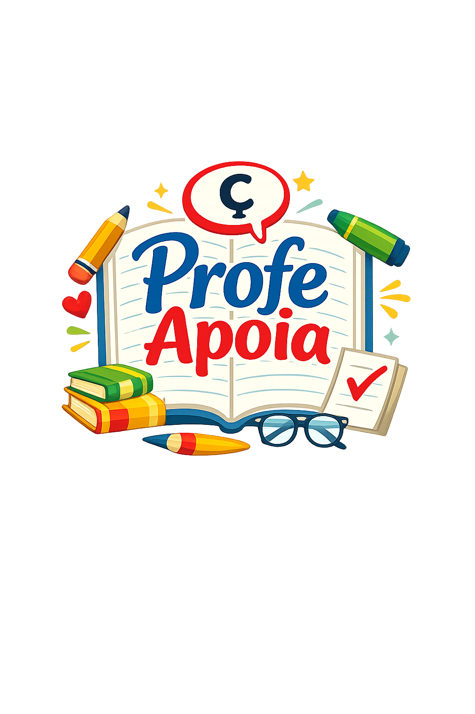

No Profe Apoia você recebe suporte especializado, orientação clara e soluções personalizadas para suas demandas.
Falar no WhatsAppSabemos como a rotina acadêmica e pedagógica pode ser desafiadora. Falta de tempo, dúvidas na elaboração de trabalhos e dificuldades com normas são obstáculos comuns.
O Profe Apoia oferece suporte qualificado com clareza e eficiência.
Atendimento personalizado para cada necessidade.
Soluções práticas para o dia a dia educacional.
Pedagoga e Linguista
Profissional com experiência no suporte acadêmico e pedagógico, oferecendo orientação segura, ética e personalizada.
Atendemos acadêmicos de diversas universidades
Receba apoio especializado agora mesmo.
Falar no WhatsApp